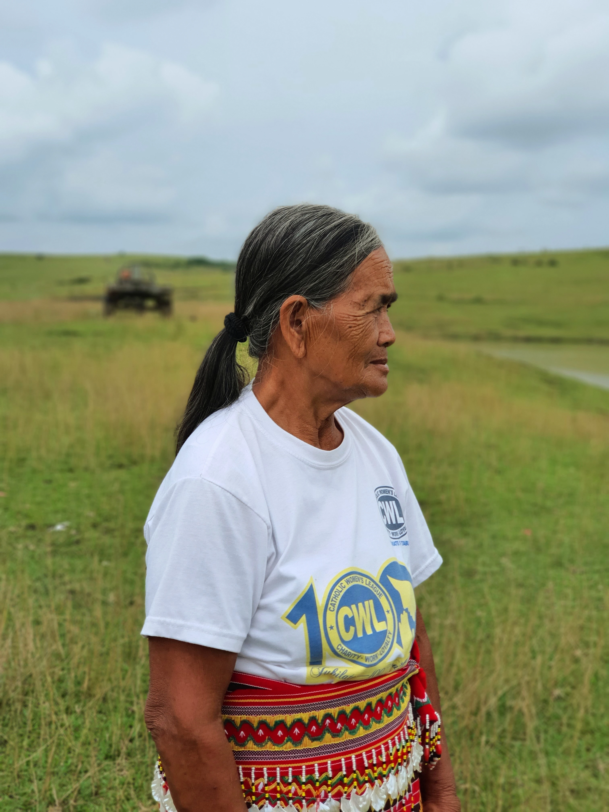

It’s no secret that women have historically faced greater barriers than men when it comes to fully participating in their respective community. In Kalinga, being the leader of a tribe was once a male-dominated role but has drastically become gender-equal task through the test of time, and the story of Irene has proved worthy of not just being a peace pact holder but also a chieftain to her tribe.
Irene Addamo, of the Sumadel tribe in Bulo, Tabuk City, Kalinga, holds a peace pact between her ethnic community and the Lubo tribe of Tanudan. She whole-heartedly inherited the title of Nangdon si Bodong (peace-pact holder) following the death of her husband in 2002. Even before her husband’s untimely demise, Irene had been helping his husband in fulfilling his duties and responsibilities as the tribal chieftain. His husband had a hearing impairment, so he required his wife's assistance in joining discussions. Irene believes that the peace pact should not only focus on men but should also be open to the entire family, especially the spouses. She pointed out that women need to take on much bigger roles to maintain and strengthen their Bodong.
As a woman in peacebuilding
Since her succession, the 70-year-old Bodong holder is enthusiastic and nonchalant when it comes to decision-making. With the help and guidance of the council of elders in her indigenous tribe, her leadership has been smooth-sailing for the past 19 years. It has been peaceful, in fact, that she has never encountered any problems, challenges, and hard negotiations on her path. She believes that diverse experiences and perspectives contribute importantly to bringing innovation, as different perspectives lead to better decision-making.
Whenever there are some concerns and matters needed to be discussed, she would always consult and consider what the elders think before making a decision. Irene has a strong sense of trust among the elders and that she will follow the elders’ decisions even if they differ from her perspective. However, she emphasized that women should also be present whenever they discuss conflicts to share their opinions on certain issues, to listen, and to actually have their voices be heard.
Despite being a woman peace pact holder for nineteen years now, she still believes that men are more capable of being the Nangdon si Bodong because they have greater strength to defend their village on the battlefield. In her perspective, this makes men more able to be the protector, defenders, and leaders of their tribe.
Maintaining peace for the future generation
More than the recognition and the indigenous tradition, Irene felt like it’s her responsibility to be the Sumadel tribe’s peace pact holder. For almost two decades of being an amity builder, it never crossed her mind to renounce her duty. According to her, the only time that she would pass her title to her eldest son is when she dies. Further, she wants the younger generations of her tribe to exercise and abide by the provisions of Pagta, even if Irene is already gone, as it is geared towards the holistic and maximal development of their members.
This 19-year mission as a peace pact holder fulfills her and makes her happy because she has been contributing and maintaining peace between the Sumadel tribe and the Lubo tribe. As she feels proud of doing service for her tribe, the folks in her community also delight that they have her as a guardian of ‘peace.’
31 October 2021